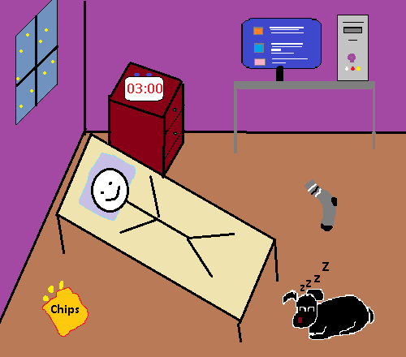

Author: This Guy!
Date: 04 August 2024 Time: 05:30 AM
So I was being a night owl, scrolling through endless void of memes on the internet, still need more dopamine.
On the regular schedule I'm Early bird kind of a person but thanks to "Sleeping all day till evening & Chugging Coffee after", I'm up for the night.
Then when the clock was getting closer to my wake-up time (If I were sleeping as I do) I decided - "That's it, I can't go to bed now". But I still had time...;
So, here I'm creating this Blog page instead of going outside & doing some Physical Workout instead.
I should've got drunk for the night because people will look into my tired red eyes and still think I'm wasted for the day anyway. (maybe next time)